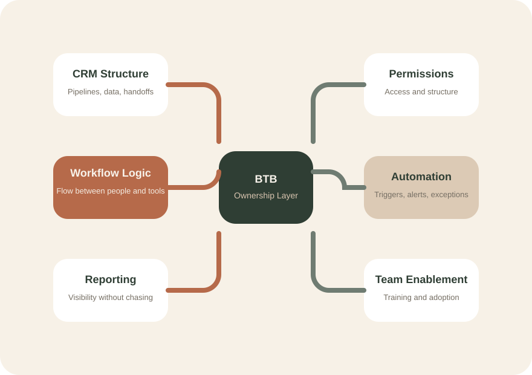
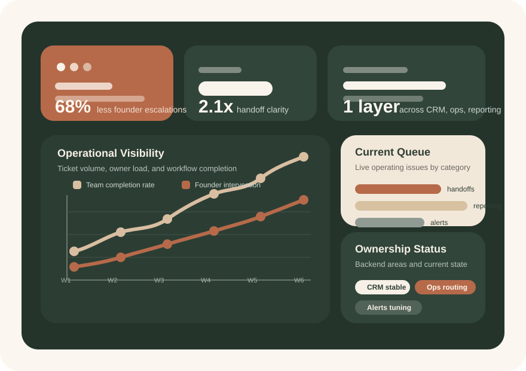

Founder decisions turn into infrastructure, process, and ownership.
What BTB owns
The back of the business should have an owner too.
Founders should not be the person holding together CRM structure, automations, reporting logic, handoffs, and backend decisions by memory. This page shows what Behind The Business actually takes ownership of.
CRM
Workflow
Automation
Reporting
Visibility and trust without staying buried in backend execution.
Owned layer
BTB
CRM
Automation
Workflows
Reporting
Founder runs
Front of business
BTB runs
Back of business
Together
Without friction

Ownership map
What Behind The Business owns behind the scenes.
This is the layer most growing service businesses know matters, but rarely have one person fully responsible for. BTB is built to take that layer off the founder's back.
CRM structure
Pipeline stages, record design, permissions, data hygiene, and configuration that matches how the business actually operates.
Workflow architecture
How work moves between people, departments, clients, and systems without depending on memory and manual chasing.
Automation logic
Integrations, triggers, notifications, handoffs, and exception handling built to reduce decision traffic.
Ownership outcomes
The point is not more tools. The point is more control with less founder involvement.
When ownership is clear, the founder gets pulled into fewer backend problems and the business becomes easier to trust from the inside.
The layer stops being split between disconnected people, freelancers, and founder memory.
Questions get absorbed by structure, workflow logic, and systems ownership.
The founder gains better oversight without needing to personally hold the backend together.
As the business evolves, the infrastructure evolves with it instead of lagging behind.
Why this matters
Most alternatives only handle part of the problem.
Founders usually bounce between people who understand operations but cannot build systems, and people who can build systems but do not understand the operation. BTB sits in the overlap.
No handoff deck and goodbye
The value is not advice alone. The value is owning what happens after the plan exists.
No isolated one-off build
Each system is designed in context of the full business, not as a disconnected task.
No stack-first thinking
The tools follow the operation. The operation does not get bent to fit a favorite platform.
One seat holding both sides
Tech and ops live in one place, so the founder is not stuck translating between them.
Positioning clarity
Why this role is different from the usual options founders try first.
The difference is not just capability. It is ownership. Somebody has to stay with the backend long enough to make it work like one layer.
Needs instructions
Helpful for execution, but still dependent on someone else to define the system and the logic behind it.
Builds to scope
Good at delivery, but usually less accountable for how the backend evolves after handoff.
Can run the machine
Often strong operationally, but not always the seat that architects and connects the infrastructure.
Owns the operating layer
One seat responsible for the systems, the context, the changes, and the way the backend holds together.
Future proof section
This page is ready to carry real client outcomes, operational wins, and trust signals.
Over time this section should hold proof that sounds familiar to the right founder, not polished claims that could belong to anybody.
"We finally had one layer we could trust."
"The business kept growing without me catching every backend issue."
"The system stopped depending on memory."
Ownership FAQ
The more specific this page is, the easier it is to trust.
Founders do not need more vague language here. They need to understand what ownership actually means in practice.
What does "own" actually mean?
It means responsibility for how the backend works, changes, gets maintained, and continues supporting the business over time.
Is this tied to one platform?
No. The tools are chosen around the operation, not the other way around.
What if we already have a few systems in place?
That's normal. BTB often enters environments where some infrastructure exists but nobody truly owns how it all works together.
Can this work across different industries?
Yes. BTB is designed around operational patterns, which often transfer well across service businesses.
"The founder should lead the business, not babysit the backend."
Cross-tool ownership
HubSpot, Airtable, Zoho, GoHighLevel, spreadsheets, forms, and adjacent tools can all sit inside one operating logic.
Domain-aware systems
The build absorbs how the team really works, what exceptions show up, and where failure tends to happen.
Calmer growth
Growth stops creating as much chaos because the backend stops depending on founder availability.

Engagement model
Start by diagnosing the load, then decide the level of ownership needed.
BTB starts with a paid audit because the right answer depends on how the backend really works today, not on a package guessed from the outside.
One month to map the backend, reveal friction, and define a build sequence.
Milestone-based implementation and refinement based on the size of the infrastructure problem.
Maintenance, troubleshooting, and continued evolution as the business changes.
Service CTA
A stronger button for BTB is "Apply," not "Join."
This makes the action feel like a high-trust service relationship instead of a low-ticket signup. It matches the brand better and helps qualify the right kind of founder.
Apply for a Systems Audit
Apply
Best for founders who already know they want someone to own the backend layer properly.
Next step
From here, the site can grow into a fuller proof and qualification flow.
The current structure gives BTB a homepage, a deeper ownership page, and a service inquiry path. The next layer is adding sharper proof, clearer examples, and stronger founder recognition.